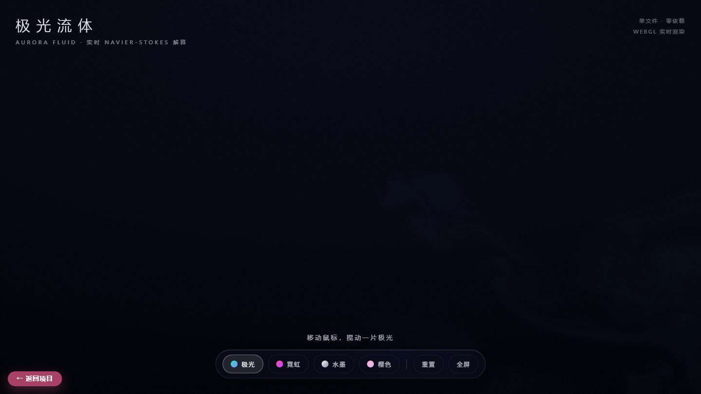
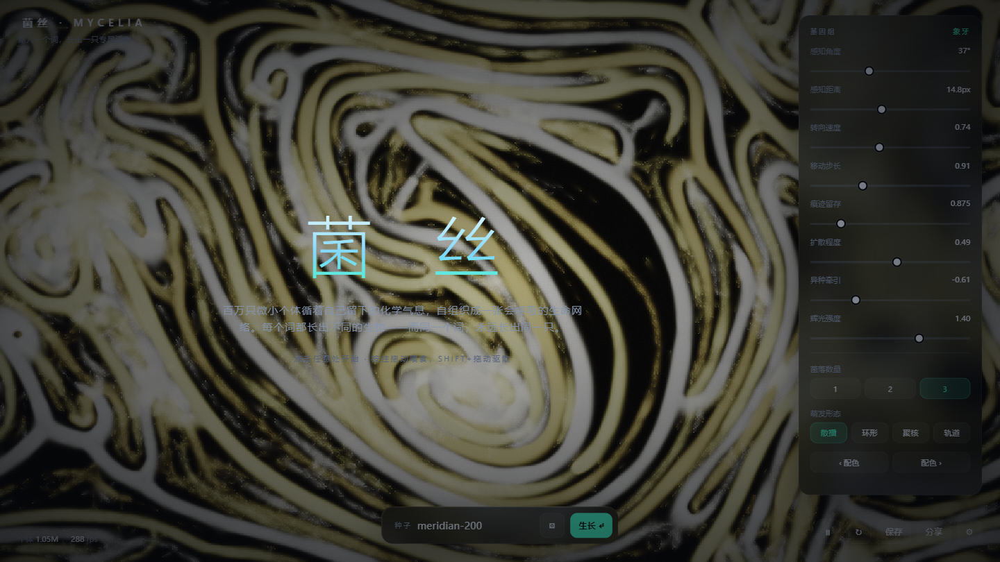
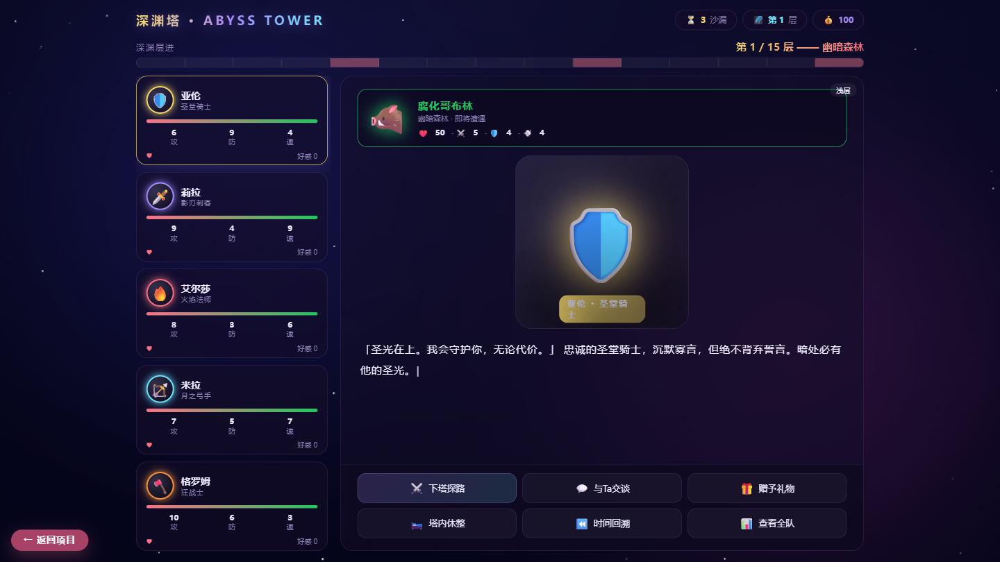
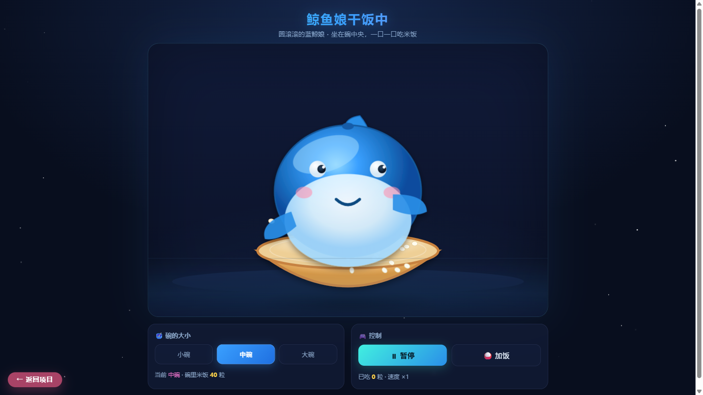
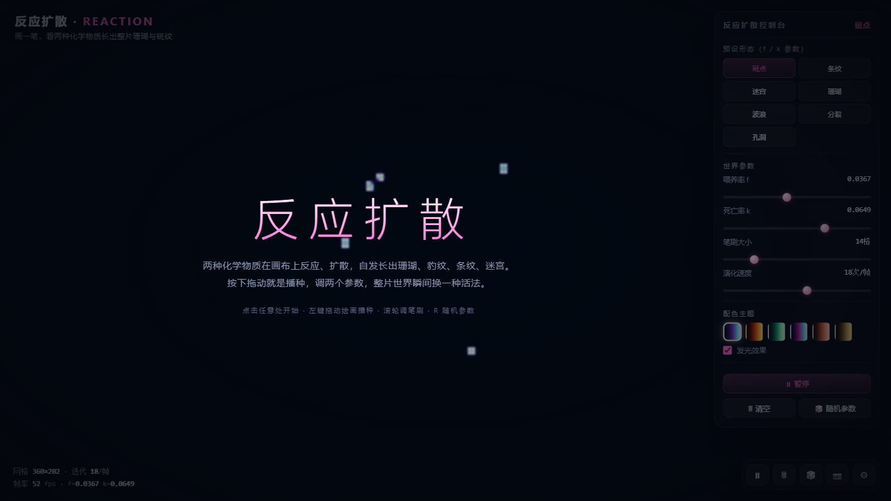
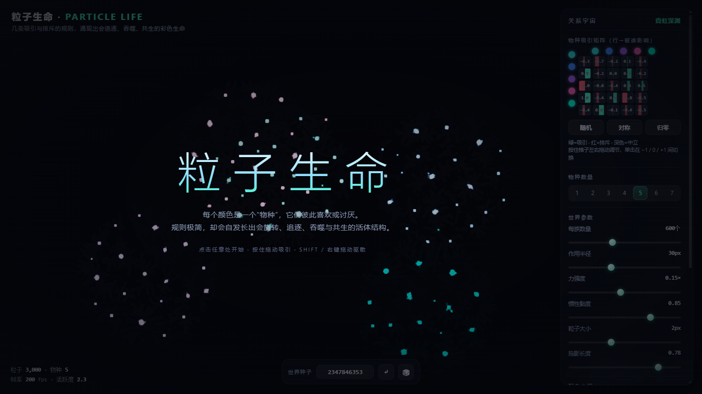
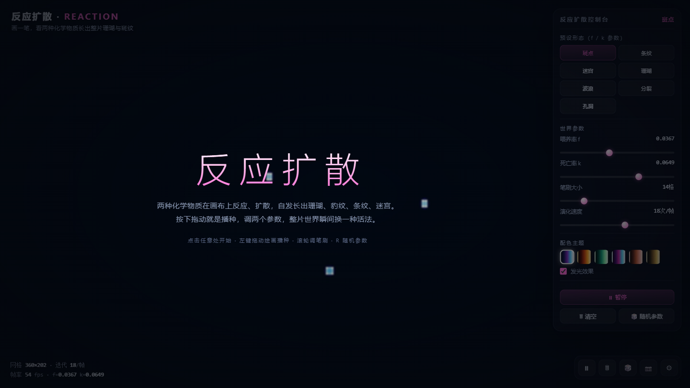
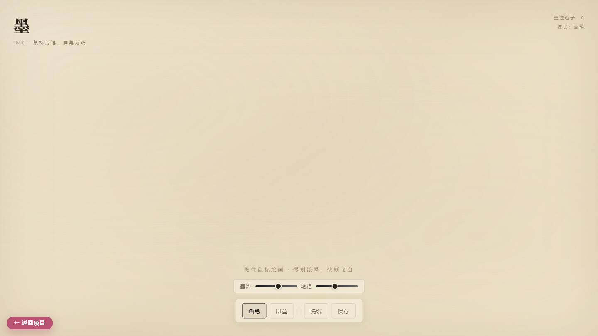
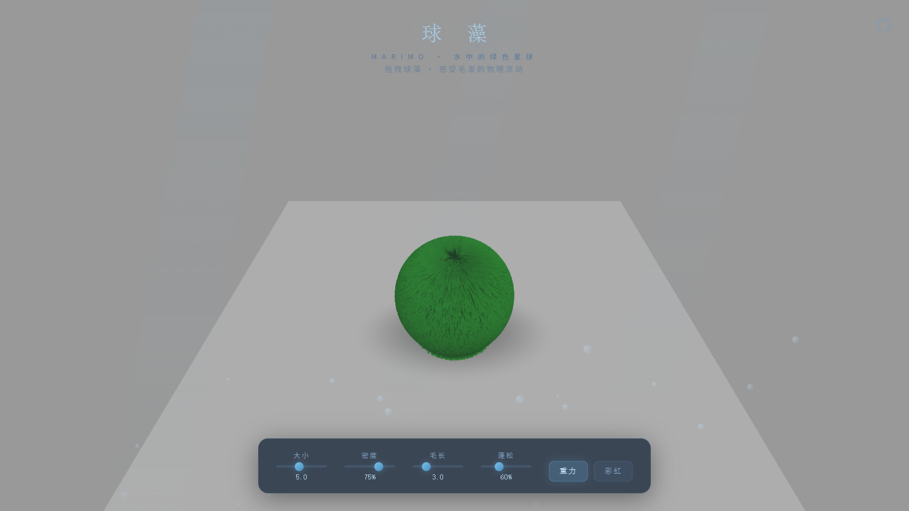
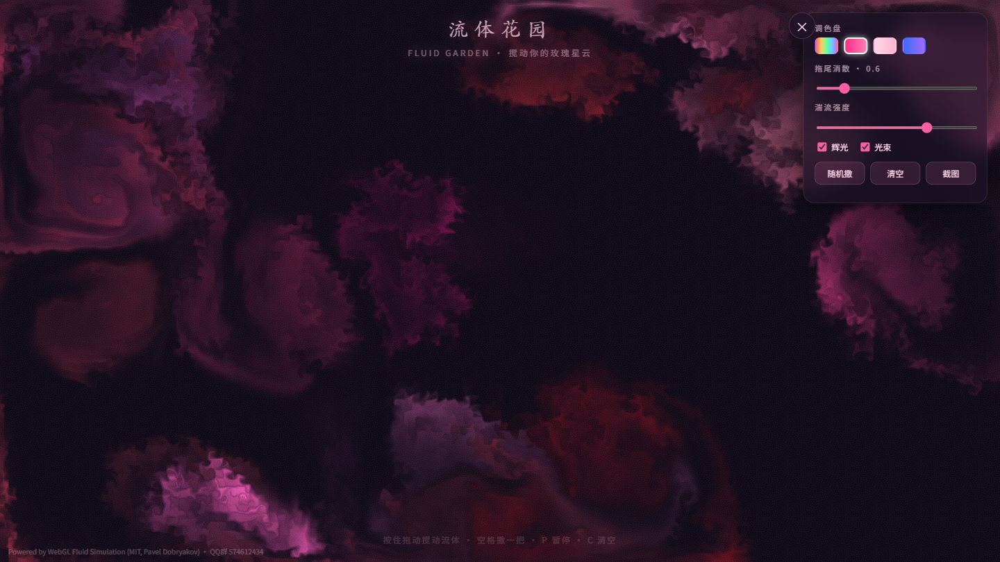

AIGC 经历与证书Certificates
2024 年 Datawhale AI 夏令营，两个方向全部完成并结营。

可图 Kolors-LoRA 风格故事挑战赛 · 核心创作者（2024.08）

阿里云天池 · 大模型逻辑推理赛道 · 营员（2024.08）
2024 年入场 AIGC：做过 LoRA 风格微调、Prompt 工程实战；同时能独立把创意落地成可交互的产品（已上线 28 个 Web 作品）。懂内容，也懂技术。
2024 年 Datawhale AI 夏令营，两个方向全部完成并结营。
AI 绘图最难的从来不是"画得好看"，而是让同一个角色、同一种风格，在 20 张图里保持一致。
基于 Kolors 大模型，用 LoRA 对目标画风做针对性微调，先锁死整体视觉基调。
把角色的外貌、服饰、年龄等拆成固定字段，每张图复用同一套描述，再按剧情只改动作与场景。
固定随机种子 + 精调采样参数，逐张对比、多轮迭代，直到角色与风格不再漂移。
从概念构思 → 分镜 → 出图 → 筛选，打通完整链路，最终产出 20 张连贯插图并交付。
能独立把想法做成可交互的成品 —— 以下均为已上线的单文件 Web 作品（在线可玩）。









